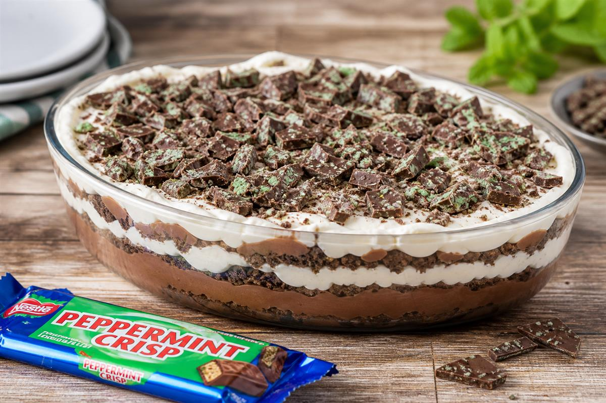

Peppermint Crisp Tart (GF)
Ingredients
- GF biscuits
- Peppermint Crisp chocolate
- Cream
- Caramel Treat
Method
- Layer biscuits.
- Add caramel mixture.
- Add peppermint crisp.
- Chill before serving.
Huntress Notes
South African favourite using gluten-free biscuits. GF Adaptation.
Fox Notes
Add a photo of the finished dish and rate after testing. Suggested photo: bright natural lighting, rustic wooden table, forest-green accents.
